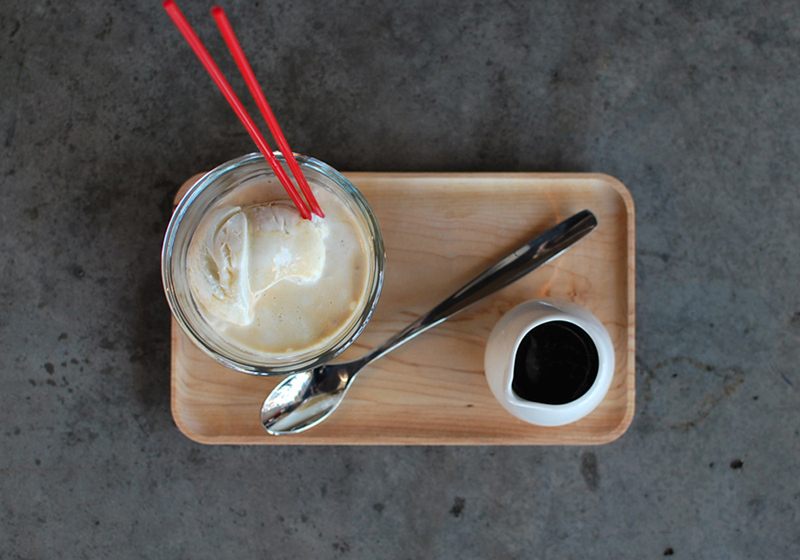

Work

Fainting Goat Gelato
Fainting Goat Gelato was the first website I had the pleasure of launching. I noticed they only had a Blogspot as a website, and approached the owners about building a site for them at no charge. After convincing them that I had no ulterior motives, I was given full creative control with plenty of time to spread my wings.
Read more

Yoroshiku
Fainting Goat Gelato was the first website I had the pleasure of launching. I noticed they only had a Blogspot as a website, and approached the owners about building a site for them at no charge. After convincing them that I had no ulterior motives, I was given full creative control with plenty of time to spread my wings.
Read more

Nutty Squirrel Gelato
Fainting Goat Gelato was the first website I had the pleasure of launching. I noticed they only had a Blogspot as a website, and approached the owners about building a site for them at no charge. After convincing them that I had no ulterior motives, I was given full creative control with plenty of time to spread my wings.
Read more

Photography
In an all-consuming digital age, I've always found comfort in the complex nature of film. I am reminded to take my time, be patient, and focus.
See more

Craft
Fainting Goat Gelato was the first website I had the pleasure of launching. I noticed they only had a Blogspot as a website, and approached the owners about building a site for them at no charge. After convincing them that I had no ulterior motives, I was given full creative control with plenty of time to spread my wings.
See more